Oct, 2013: This code lab is deprecated.
It is based on Web UI, which is superseded by Polymer.
Using Dart to Build a Modern Web App
Welcome to Dart! We built Dart to help developers from all platforms build awesome apps for the modern web. Dart compiles to JavaScript to run across all modern browsers. Dart is an easy-to-learn language at the hub of a powerful set of tools for structured web app engineering. The Dart SDK contains a rich set of libraries, a powerful editor, a package manager, and much more.
In this code lab, you’ll build a simple, single-page, modern web app for desktop and mobile.
You will learn:
This code lab assumes that you are familiar with web programming (HTML, CSS) and object-oriented programming. You do not need to be an expert in web programming to enjoy this code lab.
This code lab requires Dart Editor, which you will download and install in Step 0.
Note: Dart Editor runs on Windows (Vista, 7, or 8), Linux, or Mac.
There are numerous resources for the new Dart developer. Here are some of our recommendations:
This step sets the stage. You make sure you have the right software, can run the finished app, and know how to use Dart Editor’s integrated debugger.
If you don’t have a copy of Dart Editor, get it:
Note: If you’re on a Mac, you might see an “unidentified developer” error. Here’s the solution: Instead of double-clicking the DartEditor executable file, right-click (or Ctl+click) it to bring up a context menu, and choose Open. Then, in the dialog that comes up, click Open. An alternative workaround is to change your security settings (see Troubleshooting Dart Editor).
If you do already have a copy of Dart Editor, make sure you’re on the latest build:
You can either clone the git repo or download the ZIP file.
To clone the repo from the command line:
git clone https://github.com/dart-lang/io-2013-dart-codelab
To get the source as a ZIP file:
Now that you’ve downloaded the source code, try out the finished application.
If you have trouble, see Troubleshooting Dart Editor.
IMPORTANT: Make sure you open io-2013-codelab-finished and not its parent directory. Dart Editor analyzes all of the code in the open folder. For this code lab, it is more efficient to open just the directory for your active step rather than the top-level directory containing all of the steps.
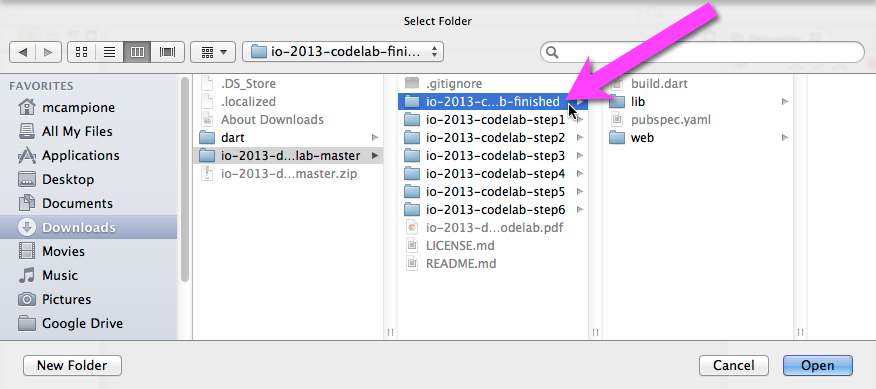
Dart Editor installs the app’s dependencies and starts building it. The progress bar is in the lower right corner of the window. Dart Editor keeps the dependencies and compiled version up-to-date. However, if you ever need or want to build the app manually, you can follow these steps:
Total time spent on web/index.html -- 1159 ms
Total time -- 1194 ms
Build finished!
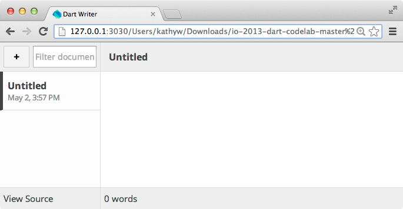
Note: If you don’t see an Untitled document, try steps 3a-3c. Also check that the web directory contains an out directory. Try running web/out/index.html. If it still doesn’t work, restart Dart Editor.
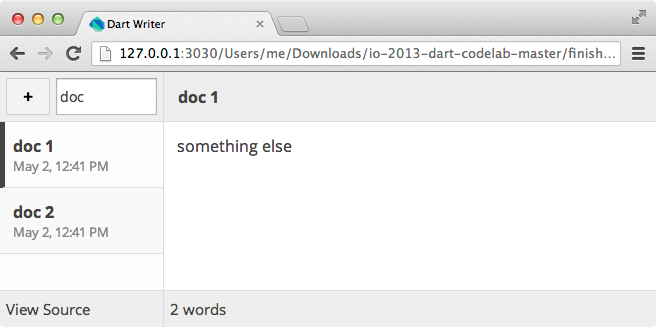

▸ Uncheck “Use system default browser”, and select the browser you need. For example, you might set the Browser field to /Applications/Firefox.app

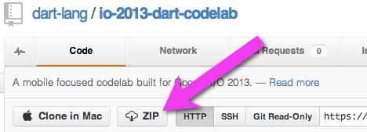
The easiest way to debug a Dart app is with Dart Editor and Dartium. Try this:
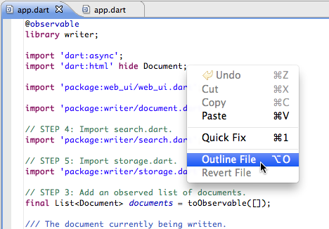 
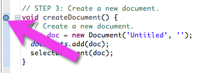
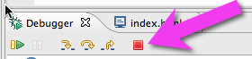
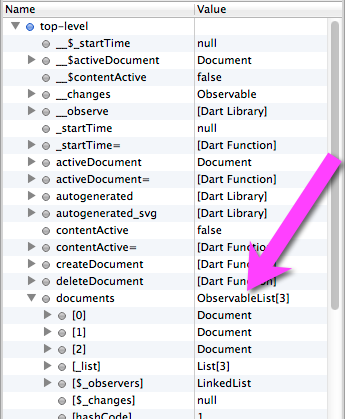
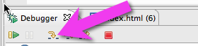
Whoops, now you’re in library code!


Note: Don’t open Developer Tools in Dartium while you’re debugging. Due to a bug, this crashes the debugger.
Begin with skeletal app | 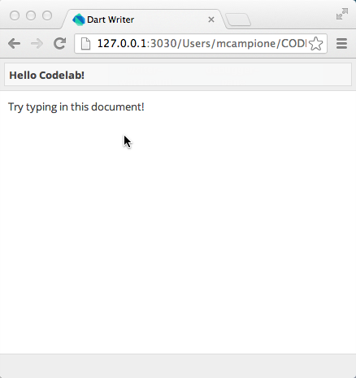 |
Add document word count to the footer | 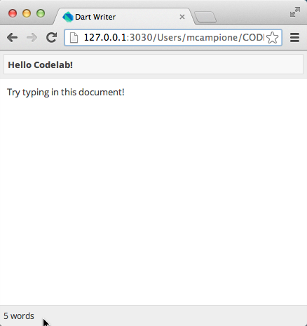 |
Create side bar | 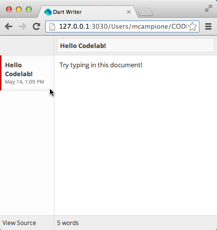 |
Add the ability to create, select, and delete documents |
|
Add search filter | 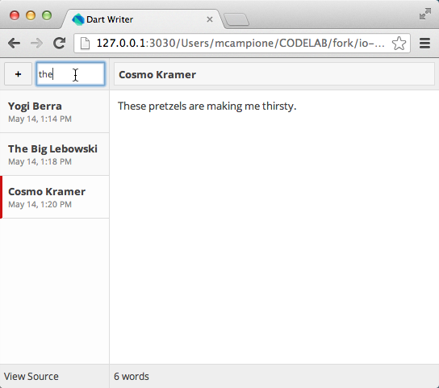 |
Add local storage (provides document persistence between invocations) | 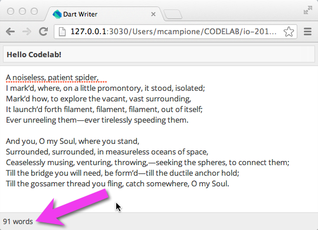 |
Optimize layout for mobile devices | Index 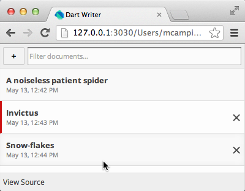 Contents 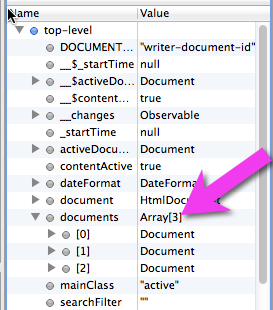 |
Now that you have Dart Editor set up and understand how the application works, let’s rebuild the app step-by-step, starting with a skeletal version. The code you downloaded from github contains a directory for each completed step of the code lab. So if necessary, you can begin each step with a correct version of the app. In the walkthrough portion of this step, you begin with the code in io-2013-codelab-step1.
You can display the value of a Dart variable on your web page directly within the HTML code. When the value of the variable changes within the Dart program, the UI automatically updates. This capability, called one-way data binding, is implemented by the Web UI public package. The Writer application uses one-way data binding to display the current document’s word count in the footer of the page.
A package is a distributable bundle of code, often containing one or more libraries. The pub package manager helps you install and manage 3rd party packages. Dart’s public repository pub.dartlang.org hosts many useful packages, including the Web UI package, which you need later for this step. The code below is a package import, which includes the Web UI package in a Dart file.
import 'package:web_ui/web_ui.dart'; // import the Web UI package
Libraries
Dart code can be organized into libraries. A library is a namespace that can contain top-level fields, top-level functions, classes, and more. A library can import other libraries, and be imported into other libraries.
The Dart core libraries start with "dart:", such as dart:core, dart:collection, and dart:async. These libraries come from the Dart SDK. For example, to import the core async library, simply add this to the top of your library:
import 'dart:async'; // an important Dart core library
A library can be split across multiple files, also known as parts. We don't show an example of parts in the code lab.
One-way data binding with Web UI
The Web UI package implements one-way data binding, which provides dynamic and automatic synchronization between an HTML element and an observable Dart variable. The @observable meta-data annotation marks a variable to be observed. The Web UI compiler, dwc, generates extra code that notes changes to an observable variable and keeps the UI in sync with those changes. Here is an observable string:
@observable String aStringOfNote = 'Hello, World!';
The value of an observable variable can be embedded in an HTML page, by including the variable name between double curly braces, {{name_of_observable_var}}, within normal HTML code, as shown:
<p> {{aStringOfNote}} </p>
Later, if the value of the variable changes in the Dart code, the web page automatically updates to reflect the new value of the variable. For example, after the following line of Dart code runs, the paragraph element changes from “Hello, World!” to “Goodbye, cruel world!”
aStringOfNote = 'Hello, Universe!';
Dart allows you to create getters and setters that look like fields when used. This means your design can start with simple fields, and evolve over time to use getters and setters. No more defensive and preemptive encapsulation!
Here is an example. Consider a simple Car class with a single field called isRunning.
class Car {
bool isRunning;
}
main() {
var car = new Car();
print(car.isRunning);
}
Imagine that you later add an Engine field to Car. Engine knows if it's running, thereby making Car's isRunning field obsolete. Do you break existing users? No way! Use a getter method!
class Engine {
bool isRunning;
}
class Car {
Engine engine;
bool get isRunning => engine.isRunning;
}
main() {
var car = new Car();
print(car.isRunning);
}
Notice how the usage of the car.isRunning is the same with both the getter and the field. The users of the Car class did not have to update their code when you changed the implementation of Car.
Close the io-2013-codelab-finished directory: right-click on the folder in the Files view of Dart Editor and select Close Folder from the menu.
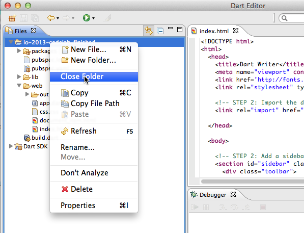
Open io-2013-codelab-step1 with File > Open Existing Folder as you did with the finished directory in the previous step.
IMPORTANT: Make sure you open io-2013-codelab-step1 and not its parent directory. Dart Editor analyzes all of the code in the open folder. For this code lab, it is more efficient to open just the directory for your active step rather than the top-level directory containing all of the steps.
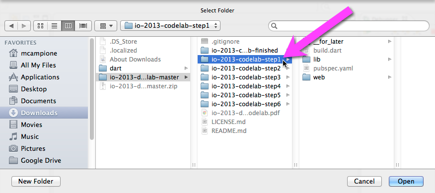
Dart Editor installs the app’s dependencies and builds it.
Right click web/index.html and choose Run in Dartium.... The app should initially look like this:
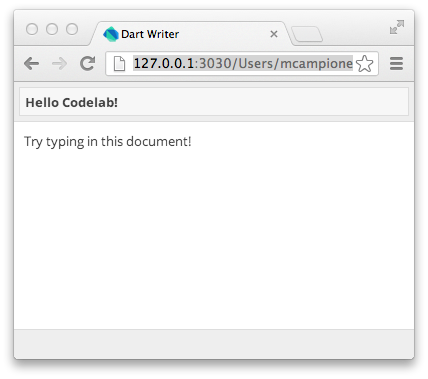
The lib/document.dart file contains the code that implements a plain text document. The Document keeps track of its creation time, has a title, and text content. In this step, you add a getter to the Document class that calculates the number of words in the document.
Double click lib/document.dart to open the file.
Near the top of the file, notice this comment.
…
/// STEP 1: Import the Web UI package
…
Comments of this style appear throughout the code, clearly marking what to do for each numbered step. The lib/document.dart file has three comments for step one.
Beneath the comment, type in the import directive for including the Web UI package. In the gray code boxes throughout this code lab, the code you need to add is bold. Code you need to delete is struck through.
// lib/document.dart … /// STEP 1: Import the Web UI package. import 'package:web_ui/web_ui.dart'; … |
Find the next STEP 1 comment; it appears a few lines below the import directive you just entered.
…
/// STEP 1: Mark the class with @observable.
…
Mark the Document class with the @observable meta-data annotation. This makes all fields of an instance of the Document class observable.
// lib/document.dart … /// STEP 1: Mark the class with @observable. @observable class Document { … |
To find the final task for step 1 in the lib/document.dart file, search for “STEP 1” and locate the comment for the wordCount method in the code.
…
/// STEP 1: Add wordCount method.
…
To search in Dart Editor, go to the Edit menu and choose Find/Replace.... Then type “STEP 1” into the text field and click Find.
Under the comment, add the code for a new getter called wordCount. The getter uses the RegExp class, which is provided in the dart:core library, to calculate how many words are in the document. The return value of this getter is embedded in the HTML in the next step.
// lib/document.dart … /// STEP 1: Add wordCount method. /** * Number of words in the document. * * A "word" is a string of characters separated by a space or a newline. */ String get wordCount { int count = new RegExp(r"(\w|\')+").allMatches(_content).length; if (count > 1) { return '$count words'; } else if (count == 1) { return '$count word'; } return 'No words - Yo, Yo write something...'; } … |
Save the file using File > Save. You have completed all of the step 1 tasks in the lib/document.dart file.
The HTML page that hosts the Writer app is web/index.html. Let’s add the word count to the footer of the page.
Double click web/index.html to open it.
Search for “STEP 1” and locate the code for the footer.
Add the code to display the word count in the footer of the document, using the double curly bracket syntax.
// web/index.html … <div class="footer"> <!-- STEP 1: Show the current word count. --> {{activeDocument.wordCount}} </div> … |
Save your changes with File > Save. You have completed all of the step 1 tasks.
Run the app again, and type in the document. As you type, the word count updates at the bottom of the page:
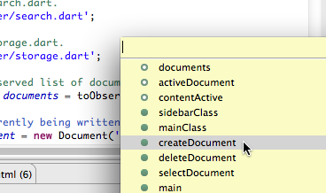
Congratulations! You’ve completed the first step.
The family of Web Component specifications, such as custom elements and HTML imports, give the web developer real encapsulation of the structure, style, and behaviors of elements in the DOM. With help from the Web UI package, you can make your own tags!
In this step, using the <element> tag, you create a custom element to implement the behavior and view of a sidebar that lists the documents. Then, you use the new custom element to create a sidebar in the Writer app.
A custom element extends the lexicon of HTML. A custom element definition encapsulates the structure (the HTML), styles (CSS), and behavior (Dart or JavaScript code) of a new kind of element. For example, you can extend <button> to create a <fancy-button> tag, with new custom behaviors and appearance.
By convention, custom element names begin with x-. For example <x-flower>. Custom element names must have a hyphen (-) in their name, such as <fancy-button>. Following the x- naming convention ensures that your custom element names always have a hyphen.
The new <element> tag allows you to declare a new element (using HTML to declare HTML, I like it!) Here is an example:
<element name="x-comment" extends="div" constructor="CommentComponent">
<template>
<div class="name">{{name}}</div>
<div class="comment"><content></content></div>
</template>
<script type="application/dart">
import 'package:web_ui/web_ui.dart';
class CommentComponent extends WebComponent {
String name;
String comment;
}
</script>[a]
</element>
The element tag defines a new kind of HTML element. To create an instance of a custom element use the element name as you would any other HTML tag. To create an instance of the element defined above, write <x-comment>. A custom element instance must have a closing tag </x-comment>.
Within the template definition above, notice the <content> tag. When an <x-comment> element is instantiated, you can use other HTML elements between <x-comment> and </x-comment>, a paragraph, a span, a list, for example. Those elements replace the <content> tag for that instantiation. Using attributes, you can filter for specific elements to replace the <content> tag.
To use a custom element, you often import the HTML that contains the <element> tag. Luckily, HTML has a method for including resources: the <link> tag. Here is an example:
<link rel="import" href="comment_component.html">
The <link> tag must appear in the <head> of the document.
Once you have imported the custom element, you can use it in your document. Here is an example:
<ul>
<li><x-comment name="Bob">I totally agree!</x-comment></li>
<li><x-comment name="Alice">I totally disagree!</x-comment></li>
</ul>
Dart makes it easy and terse to write one-line functions with the "fat arrow" syntax. Here is an example:
int nextNumber() => i++;
The above code is syntactic sugar for:
int nextNumber() {
return i++;
}
First, create a new file for the custom element inside of the web/ directory.
Ensure you are working in web/document_item.html, and add the following code:
// web/document_item.html <html><body> <!-- STEP 2: Define a custom element. → <element name="x-document-item" constructor="DocumentItem" extends="div" apply-author-styles> <!-- STEP 2: Define the DOM template for our custom element --> <template> </template> <!-- STEP 2: Add the script tag that defines this component's behaviour. --> <script type="application/dart"> </script> </element> </body></html> … |
A few notes about the code above:
Notice the <template> tag inside of <element>. A custom element can define its own structure with the <template> tag. Fill in this template now.
Add the code for the template as shown. You need to also add the comments for STEP 3 just as we have them in the code. You need the comments to orient yourself later when you implement Step 3.
// web/document_item.html … <!-- STEP 2: Define the DOM template for our custom element --> <template> <!-- STEP 3: On click, select the document. --> <div class="item {{isActiveClass}}"> <div class="title">{{title}}</div> <div class="modified">{{modified}}</div> <!-- STEP 3: Add delete button. --> </div> </template> … |
You can use one-way data binding in a template. Each time a custom element is instantiated, an instance of the Dart class is created and associated with the custom element. Data bindings in the template are bound to fields in that Dart instance. For example, {{title}} binds to a field from the instance of DocumentItem that is created when an element of this type is created. It's a good idea to move all logic into the Dart class, and just use fields and getters for the HTML.
Speaking of the class, let's add that now!
The script
Use a <script> tag to declare the Dart class that goes with the custom element. The Dart class contains any state and behavior applicable to the view.
Ensure you are still editing web/document_item.html, and add the following code inside the <script> and </script> tags:
// web/document_item.html … <!-- STEP 2: Add the script tag that defines this component's behaviour. --> <script type="application/dart"> import 'package:web_ui/web_ui.dart'; import 'package:writer/document.dart'; import 'app.dart' as app; /** * This Dart class defines the behavior and * state of the custom element. */ class DocumentItem extends WebComponent { Document doc;
String get title => doc.title.isEmpty ? 'Untitled' : doc.title;
String get modified => dateFormat.format(doc.modified);
String get isActiveClass => doc == app.activeDocument ? 'active' : ''; } </script> … |
Note: Dart Editor doesn't yet fully support Dart code embedded inside of <script> tags. For example, you can't use code completion inside of a <script> tag yet. We anticipate that the editor will have this functionality in time for 1.0.
A few notes about the code above:
Save your changes to web/document_item.html.
To create instances of <x-document-item>, the main application's HTML needs to import the code that defines the custom <x-document-item> tag. Luckily, HTML already has a mechanism to link to other resources: the <link> tag!
Open web/index.html and add the following code:
// web/index.html … <link rel="stylesheet" type="text/css" href="css.css"> <!-- STEP 2: Import the document item component. --> <link rel="import" href="document_item.html"> </head> … |
With the custom element implemented, and imported, time to use <x-document-item>!
Make sure you are still editing web/index.html. And yes, you need to write all those comments just as we have them in the code. You will add more functionality in the following steps, so you need the comments to ensure you can orient yourself later.
Add the following code:
// web/index.html … <body> <!-- STEP 2: Add a sidebar to the application. --> <section id="sidebar" class="{{sidebarClass}}"> <div class="toolbar"> <!-- STEP 3: Add a button to create a new document. --> <div class="input-wrap"> <!-- STEP 4: Add a input box to filter documents. --> </div> </div> <!-- Documents list --> <div class="items"> <!-- STEP 3: Iterate over list of documents. --> <!-- STEP 2: Add the active document to the sidebar. --> <x-document-item doc="{{activeDocument}}"></x-document-item> </div> <!-- Also check out dartlang.org! --> <div class="footer"> <a href="https://github.com/dart-lang/io-2013-dart-codelab">View Source</a> </div> </section> <!-- Editing window --> <section id="main" class="{{mainClass}}"> … |
Take a look at <x-document-item doc="{{activeDocument}}">. The active document is bound into the x-document-item tag via the doc attribute. The activeDocument object is a top-level variable from app.dart.
Save your changes in web/index.html and in web/document_item.html, if you haven’t already done so.
Depending on the order in which you saved the files, you might see warnings or errors in Dart Editor complaining about unknown custom elements. Try running Tools > Reanalyze Sources.
Run the app. On the left side of the app is a sidebar that contains a document.
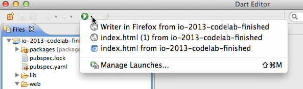
In this step, you’ll implement support for creating, deleting, and selecting documents. Your code will use an observable list to keep track of which documents exist.
Use the toObservable() function from the Web UI library to make a List or a Map observable. In the Writer app, making the list of documents observable enables Web UI to update your app’s UI whenever a document is created or deleted.
Template loops allow iteration over Iterable Dart objects, such as Collections. To create a loop that operates on each item in an Iterable object, use the iterate attribute in a <template> tag. The code below displays the alphabet by looping over a list of strings, of which each string contains a single character.
// in Dart code
List<String> alphabet = toObservable(‘abcdefghijklmnopqrstuvwxyz’.split(''));
// in HTML code
<template iterate="letter in alphabet"> {{letter}} </template>
You’ll be editing three files this time: web/app.dart, web/index.html, and web/document_item.html.
(Optional: Remember that if necessary, you can start with clean files for each step. If you want to, close the directory for step 2 and open the io-2013-codelab-step3 directory now.)
Open web/app.dart and add the line of code shown below that creates an empty, observable list of documents.
// web/app.dart // STEP 3: Add an observed list of documents. final List<Document> documents = toObservable([]); |
First, let’s implement creating documents.
Continue editing web/app.dart.
Add the createDocument() function to web/app.dart where indicated by the comments. The new function calls another function, called selectDocument(), which is not defined yet and about which Dart Editor issues warnings. You’ll add that function just below, so ignore the warnings for now.
// web/app.dart // STEP 3: Create a new document. void createDocument() { // Create a new document. var doc = new Document('Untitled', ''); documents.add(doc); selectDocument(doc); } |
Next, let’s implement deleting a document.
// web/app.dart // STEP 3: Add code to delete a document void deleteDocument(Document doc) { documents.remove(doc); // STEP 5: Also delete from local storage. } |
Now, let’s implement setting the currently selected, or active, document.
// web/app.dart // STEP 3: Add code to select a document. void selectDocument(Document doc, {bool markActive: false}) { if (documents.isEmpty) { activeDocument = null; } else if (doc != null && documents.contains(doc) && doc != activeDocument) { // Change active document. activeDocument = doc; } else if (activeDocument != null && documents.contains(activeDocument)) { // Stay on the active document and display the editing window. contentActive = markActive && doc == activeDocument; } else { // Fall back to the last document. activeDocument = documents.last; } } |
A quick note about Dart syntax. The second argument, markActive, is optional as indicated by the curly brackets. If the caller does not provide the argument, the value is false.
Save web/app.dart. The Dart Editor warnings should go away.
We need a little more Dart code to create and select the first document.
Find the main() function and add two lines of code:
// web/app.dart void main() { // STEP 5: Initialize with all documents from local storage. // STEP 3: Create a new document if there are none. if (documents.isEmpty) createDocument(); // STEP 3: Select the first document in the list of documents. selectDocument(documents.first); } |
Save web/app.dart.
Now that we have functions that let us create, delete, and select documents, we can create elements that provide a UI to use that functionality.
Open web/index.html.
Create a + button, and set our new createDocument() function as the button’s mouse click callback function.
// web/index.html <div class="toolbar"> <!-- STEP 3: Add a button to create a new document. --> <button on-click="createDocument()">+</button> ... |
Delete the old code that created a single <x-document-item>, and replace it with code that creates one <x-document-item> for each item in the documents list.
// web/index.html <!-- STEP 3: Iterate over list of documents. --> <template iterate="doc in documents"> <!-- STEP 4: Hide documents that don't match search filter. --> <!-- Our custom document element! --> <x-document-item doc="{{doc}}"></x-document-item> </template> <!-- STEP 2: Add the active document to the sidebar. --> <x-document-item doc="{{activeDocument}}"></x-document-item> |
Save web/index.html.
Open web/document_item.html.
Now that we have selectDocument() and deleteDocument() functions, our custom component can use them. The following code uses the new selection function and adds an “X” button to <x-document-item> that deletes the item.
// web/document_item.html <!-- STEP 3: On click, select the document. --> <div class="item {{isActiveClass}}"> <div class="item {{isActiveClass}}" on-click="app.selectDocument(doc, markActive: true)"> … <!-- STEP 3: Add delete button. --> <button class="delete" on-click="app.deleteDocument(doc)">×</button> |
Save web/document_item.html.
Try it out! Run the app.
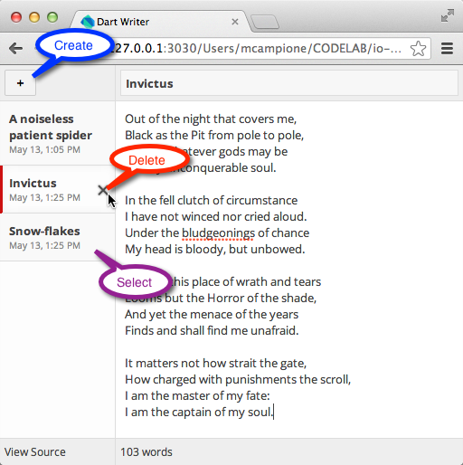
In this step, you will learn how to connect an HTML input field to a Dart object, and then conditionally display DOM elements based on the contents from the input field.
The contents of a <template> tag can be added to, or removed from, the DOM based on a conditional. If a conditional is true, the contents of the <template> are added to the DOM (in other words, the contents are displayed on the page). If the conditional is false, the contents are removed from the page.
Here is a simple example of a conditional template:
<template if="user.agreedToTOS">
Thanks for clicking agree!
</template>
Every time the conditional changes (from false to true, or from true to false), the contents are added or removed.
An HTML input field, such as a text input, can be bound to a Dart object. Whenever the input field's value changes, the Dart object's value changes. Whenever the Dart object's value changes, the input field changes. This is known as two-way binding.
Here is a simple User class:
class User {
String username;
}
Here is a simple example of an input field binding:
<input type="text" name="username" bind-value="user.username">
The value property of the input field is bound to the username field of the user object—an instance of the User class.
To help you get started, we've given you the shell for the new search library.
You need to add a top-level field that will contain the search filter.
Add the following code to lib/search.dart.
// lib/search.dart import 'package:writer/document.dart'; // STEP 4: Add an observed string to filter documents. @observable String searchFilter = ''; … |
Now that you have an observable searchFilter string, you can filter documents.
Inside of lib/search.dart, add the following code:
// lib/search.dart // STEP 4: Add function to check if a document matches the search filter. bool matchesSearchFilter(Document doc) { if (searchFilter.isEmpty) { return true; } return doc.title.toLowerCase().contains(searchFilter.toLowerCase()) || doc.content.toLowerCase().contains(searchFilter.toLowerCase()); } |
Notice that searchFilter.isEmpty is a getter—it doesn’t have trailing parentheses.
Save your changes.
With the search library complete, you need to import it into the main application.
Open web/app.dart and add the following code:
// web/app.dart import 'package:writer/document.dart'; // STEP 4: Import search.dart. import 'package:writer/search.dart'; // STEP 5: Import storage.dart. … |
To keep the path to search.dart relative to app.dart, we use the package: import method to import the search.dart library from the writer package. The pubspec.yaml file declares the writer package. The pub command creates all the necessary symlinks to allow you to not have to create import paths like '../../lib/search.dart'.
Save your changes.
Let's turn our attention to the HTML for the search box. You added the observable searchFilter field in search.dart, now let's bind that into an HTML input field.
Open web/index.html and add the following code:
// web/index.html … <div class="input-wrap"> <!-- STEP 4: Add a input box to filter documents. --> <input type="text" placeholder="Filter documents..." bind-value="searchFilter"> </div> … |
The variable name searchFilter must match the string inside of the bind-value attribute.
When the search filter changes, we want to dynamically update the documents displayed on the page.
Continue editing web/index.html and add the following code:
// web/index.html … <!-- STEP 3: Iterate over list of documents. --> <template iterate="doc in documents"> <!-- STEP 4: Hide documents that don't match search filter. --> <template if="matchesSearchFilter(doc)"> <!-- Our custom document element! --> <x-document-item doc="{{doc}}"></x-document-item> </template> </template> … |
Notice that you are placing the conditional template within the template loop.
The Web UI library knows that matchesSearchFilter relies on searchFilter, so whenever searchFilter changes, it re-runs this template. Only those documents that pass matchesSearchFilter will be displayed with the custom <x-document-item> tag.
Time to run the code! After completing this step, you should be able to search for documents by title or contents. The search results are live. Note: there is a known bug, if the currently opened document does not match the filter, it won't disappear.
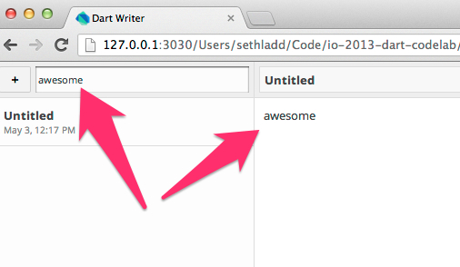
If you do not see the input field for the filter, run Tools > Reanalyze Sources.
In this step, you learn how to save the user’s documents in local storage, and later to remove the documents. In addition to saving the documents in local storage, the app also maintains a list of document IDs in local storage. The main() function uses this list to initialize the app and load the first document. The app saves the documents as JSON-formatted strings. You also learn how to use the JSON library to serialize and revive the document contents.
Local storage can be use to keep persistent data between invocations of your app. The data may only be accessed by the origin that created it. The Window object that hosts the web app has a localStorage object that your code can use to store and retrieve data. The local storage object is implemented as a Map<String, String>.
Save data in local storage by putting a key/value pair in the localStorage object.
window.localStorage['key1'] = 'val1';
window.localStorage['key2'] = 'val2';
window.localStorage['key3'] = 'val3';
Delete data from local storage by removing a key/value pair from the localStorage object.
window.localStorage.remove(['key1']);
You can use Map APIs such as containsValue(), clear(), and length:
assert(window.localStorage.containsValue('does not exist') == false);
window.localStorage.clear();
assert(window.localStorage.length == 0);
JSON is a text-based, human-friendly format for representing data of different types. The dart:json library has two useful functions for converting data to/from JSON: stringify() and parse(). Here’s a small example that converts a list of objects to JSON and back again.
import 'dart:json' as JSON;
var list = [1, "two", 3.0]; // a list of objects
String listAsString = JSON.stringify(list); // convert list of objects to JSON string
print(listAsString); // [1,"two",3.0]
var revivedList = JSON.parse(listAsString); // convert JSON string to list object
print(revivedList); // [1, two, 3.0]
This step requires you to edit three files: lib/storage.dart, web/index.html, and web/app.dart. Let’s begin with storage.dart.
To help you get started, we've given you the shell for the new local storage library.
Modify the saveDocument() function. Add the code, shown in bold below,
// storage.dart … <!-- Document title --> /// Save the document to local storage. void saveDocument(Document doc) { // STEP 5: Save the serialized version of the document to local storage. window.localStorage[doc.id] = doc.toJson(); // STEP 5: Add the new document ID to our list of document IDs. if (!_storedIds.contains(doc.id)) { _storedIds.add(doc.id); } // STEP 5: Update local storage map of IDs. window.localStorage[DOCUMENT_ID_KEY] = JSON.stringify(_storedIds); } … |
Continue editing lib/storage.dart.
Modify the removeDocument() function. Add the code
// storage.dart … /// Removes the document from local storage. void removeDocument(Document doc) { // STEP 5: Remove the document from local storage. _storedIds.remove(doc.id); window.localStorage.remove(doc.id); window.localStorage[DOCUMENT_ID_KEY] = JSON.stringify(_storedIds); } … |
Continue editing lib/storage.dart.
Modify the fetchDocuments() function. Add the code
// storage.dart … // Returns a collection of all documents from local storage. Iterable<Document> fetchDocuments() { // STEP 5: Get all document IDs from local storage. if (window.localStorage[DOCUMENT_ID_KEY] != null) { _storedIds = JSON.parse(window.localStorage[DOCUMENT_ID_KEY]); } // STEP 5: Get all documents from local storage. return _storedIds.map(_fetchDocument); } /// Gets a document from local storage. Document _fetchDocument(String id) { // STEP 5: Return one deserialized document from local storage. return new Document.fromJson(window.localStorage[id]); } … |
Save your changes to lib/storage.dart.
Now that you’ve written the library code that saves and retrieves documents, you can use the new functions in the app. The app saves the documents based on user-generated events in the UI. So let’s add event handlers to the HTML elements for saving the documents.
Open the web/index.html file.
Find the code that creates the text element for the document titles.
Add a key-up event handler to the text field. Each time the user types a character in the document title, the event handler saves the document.
// index.html … <!-- Document title --> <div class="input-wrap"> <!-- STEP 5: Add event handler to save the active document. --> <input type="text" bind-value="activeDocument.title"> <input type="text" bind-value="activeDocument.title" on-key-up="saveDocument(activeDocument)" /> </div> … |
Now, find the textarea used to enter the contents of a document.
Add a key-up event handler to the textarea. Each time the user types a character into the document, the event handler saves the document.
// index.html … <!-- Content box --> <!-- STEP 5: Add event handler to save the active document. --> <textarea class="content" bind-value="activeDocument.content"></textarea> <textarea class="content" bind-value="activeDocument.content" on-key-up="saveDocument(activeDocument)"></textarea> … |
Save your changes to web/index.html .
For removing documents and initializing the app, you need to edit the Dart code.
Open web/app.dart.
Add an import directive near the top of the file to include the storage.dart library you just wrote.
// app.dart @observable library writer; import 'dart:html' hide Document; import 'package:web_ui/web_ui.dart'; import 'package:writer/document.dart'; // STEP 4: Import search.dart. import 'package:writer/search.dart'; // STEP 5: Import storage.dart. import 'package:writer/storage.dart'; // STEP 3: Add an observed list of documents. final List<Document> documents = toObservable([]); … |
Continue editing web/app.dart.
Modify the main() function in app.dart. Use the fetchDocuments() function from the storage.dart library to initialize the app with the saved documents.
// app.dart … /// Starts the application. void main() { // STEP 5: Initialize with all documents from local storage. documents.addAll(fetchDocuments()); // STEP 3: Create a new document if there are none. if (documents.isEmpty) createDocument(); // STEP 3: Select the first document in the list of documents. selectDocument(documents.first); } … |
Continue editing web/app.dart.
Find the deleteDocument() function. Add code to remove the document from local storage when the user deletes the document from the app.
// app.dart … // STEP 3: Add code to delete a document void deleteDocument(Document doc) { documents.remove(doc); // STEP 5: Also delete from local storage. removeDocument(doc); } … |
Save your changes to web/app.dart.
You’ve completed the code edits for this step. Make sure all of your changes are saved.
Run the app again. Create and name several documents. Kill the app and start it up again. The documents you saved persist between invocations of the app.
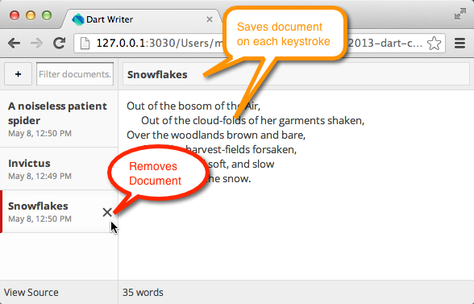
Your app already works on mobile, since many gestures emulate mouse events, such as clicks. But we can do better. In this step, you’ll make your app feel more native on mobile by adding some code to control layout on mobile devices and by adding some specialized CSS styles.
The <meta> tag, with the viewport attribute, helps to optimize your site for mobile devices. Here’s what the Mozilla developer website has to say about mobile-optimization:
A typical mobile-optimized site contains something like the following:
<meta name="viewport" content="width=device-width, initial-scale=1, maximum-scale=1">
The width property controls the size of the viewport. It can be set to a specific number of pixels, like width=600, or to the special value device-width, which is the width of the screen in CSS pixels at a scale of 100%. (The content attribute also supports corresponding height and device-height values, which may be useful for pages with elements that change size or position based on the viewport height.)
The initial-scale property controls the zoom level when the page is first loaded. The maximum-scale, minimum-scale, and user-scalable properties control how users are allowed to zoom the page in or out.
The @media rule allows different style rules for different media in the same style sheet. Shown below are two rules, one which applies when the app runs in an environment, such as a small mobile device, which has a maximum width of 500 pixels. The other applies when the app runs in an environment that allows a larger width.
@media all and (max-width: 500px) {
…
}
@media all and (min-width: 501px) {
…
}
Before you start changing the code, run the app in a tiny window so you can emulate the app’s behavior on a mobile phone. You can contrast this behavior with the revised version of the app at the end of this step.
Run the app. Shrink the window down as small as you can.
The UI is not too cluttered and has a double scroll bar. We can do better!
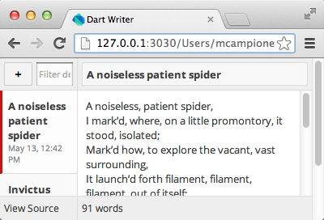
Open web/index.html.
At the top of the file, within the <head> section add this meta tag:
// web/index.html … <!-- STEP 6: Add viewport meta tag to control layout on mobile devices --> <meta name="viewport" content="width=device-width, initial-scale=1, maximum-scale=1, user-scalable=no"> … |
This tag fixes the size of the app to the exact size of the device.
Save your changes.
Open web/css.css.
At the bottom of the CSS file, add all of the code in bold (79 lines):
// web/css.css … /* STEP 6: Add styles for mobile devices */ /* Mobile styles. */ @media all and (max-width: 500px) { body { overflow: hidden; } #sidebar .touched .item { background-color:rgba(250, 150, 150, .8); -webkit-transition: all .7s cubic-bezier(.65,-0.50,.76,1.32); -moz-transition: all .7s cubic-bezier(.65,-0.50,.76,1.32); transition: all .7s cubic-bezier(.65,-0.50,.76,1.32); } #sidebar { top: 0; left: 0; right: 0; bottom: 0; width: 100%; -webkit-transition: -webkit-transform 0.3s ease-in-out; -moz-transition: -moz-transform 0.3s ease-in-out; transition: transform 0.3s ease-in-out; -webkit-transform: translate3d(-20%, 0, 0); -moz-transform: translate3d(-20%, 0, 0); transform: translate3d(-20%, 0, 0); } #sidebar.active { -webkit-transform: translate3d(0, 0, 0); -moz-transform: translate3d(0, 0, 0); transform: translate3d(0, 0, 0); } #sidebar .item.active .delete { opacity: .7; } #main { top: 0; left: 0; right: 0; bottom: 0; -webkit-transition: -webkit-transform 0.3s ease-in-out; -moz-transition: -moz-transform 0.3s ease-in-out; transition: transform 0.3s ease-in-out; -webkit-transform: translate3d(100%, 0, 0); -moz-transform: translate3d(100%, 0, 0); transform: translate3d(100%, 0, 0); } #main.active { -webkit-transform: translate3d(0, 0, 0); -moz-transform: translate3d(0, 0, 0); transform: translate3d(0, 0, 0); } #main .title button { display: block; } #main .title .input-wrap { margin-left: 40px; } /* Let's not go there. It is a silly place. */ #main:only-of-type { -moz-transition: none; -webkit-transition: none; transition: none; } #main:only-of-type button { display: none; } #main:only-of-type .title .input-wrap { margin-left: 0; } } |
This code separates the app into two panels: one for the index of documents and one for the content of the current document. Choosing a document from the index slides the content panel into view. In the contents panel, a new button slides from the documents contents back to the index.
Save your changes.
Run the new version of the app in your browser and shrink the window down as small as possible once again.
On the document index panel, you see a list of the documents you’ve created.
Click a document to view its contents.
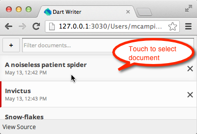
On the document contents panel, a small button with an arrow ‘<’ appears to the left of the document title.
Click it to return to the document index.
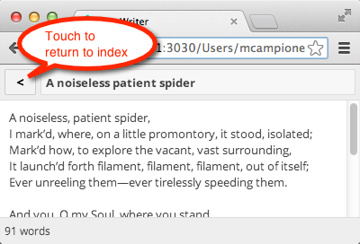
You can find the deployed app at:
http://dart-lang.github.io/io-2013-dart-codelab/deploy/out/index.html
A shortcut: goo.gl/hC0NM
Congratulations, you’ve completed the code lab! If you’d like to do more Dart, check out our website and open-source projects:
[a]Chris Buckett:
This can also be in an external file.